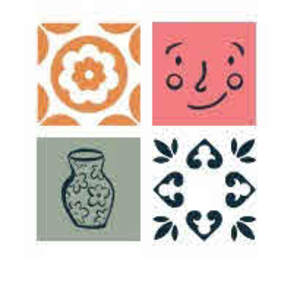

Trade Mark Journal No.2025/037 12 September 2025
UK00004246718 8 August 2025 (2,16,21,35,39,40,41,42,43)

- Class 2
- Ceramic paints; Coatings; Dyes, colourants, colouring agents, pigments and inks; Inks for printing, marking and engraving; Materials for colouring ceramic substrates; Metals in foil and powder form for use in painting, decorating, printing and art; Paints, glazes, varnishes, and lacquers; Pottery enamels; Preservatives and substances for protection against rust and corrosion; Raw natural resins and epoxy resins.
- Class 16
- Books; Educational and instructional material; Guide books; Handbooks; Information booklets and flyers; Magazines; Materials for artists; Modelling clay; Moulds for modelling clays [artists' materials]; Polymer modelling clay; Printed matter; Printed visuals; Resource books; Stationery; Training manuals.
- Class 21
- Bowls; Ceramic tableware and ceramics for kitchen or household use; Coasters, not of paper or textile; Coffee cups and mugs; Containers for household or kitchen use; Cookware; Crockery; Cups and mugs; Dishware; Drinkware; Glassware; Household or kitchen utensils; Plates; Pottery; Tableware; Wine glasses and jugs; Works of art of porcelain, ceramic, earthenware or glass.
- Class 35
- Administration, arranging and organisation of competitions and prize draws for advertising and promotional purposes; Advertising, marketing, promotional and publicity services; Advertising services for the promotion of e-commerce; Business intermediary services; Commercial intermediation for business purposes; Demonstration of goods for promotional purposes; Display services for merchandise; Merchandising; Presentation of goods on communications media, for retail purposes; Online ordering services; Product marketing; Product sampling; Promotional and sales promotion services; Promotional marketing; Providing commercial information and advice for consumers in the choice of products and services; Provision of an online marketplace for buyers and sellers of goods and services; Referral marketing; Retail and wholesale services in relation to art materials, kitchenware, ceramic paints, modelling clay, dishware, household utensils, pottery, and crockery; information, consultancy and advice in relation to the foregoing.
- Class 39
- Arranging of excursions and day trips; Arranging travel tours; Booking agency services relating to travel; Booking of holiday travel and tours; Itinerary travel advice services; Planning, arranging and booking of travel; Travel agency services for arranging travel; Travel arrangement; Travel consultancy; Travel guide and travel information services; Travel organisation; Travel reservation; Travel services; Trip planning services; information, consultancy and advice in relation to the foregoing.
- Class 40
- Ceramic glazing; Custom construction of goods; Custom manufacturing; Firing pottery; Treatment of materials for the manufacture of ceramic goods; Upcycling [waste recycling]; Woodworking and metalworking; information, consultancy and advice in relation to the foregoing.
- Class 41
- Arranging, conducting, managing, organising, planning, producing and providing cultural, educational, recreational, leisure, and entertainment events, courses, competitions, forums, conferences, workshops, experiences and activities; Creation and production of cultural, educational, recreational, leisure, and entertainment content; Cultural services; Educational and training services; Electronic publication; Entertainment; Leisure and recreational services; Production of podcasts; Provision, hire and rental of cultural, educational, recreational, leisure, and entertainment facilities and equipment; Publication of multimedia material online; Publishing services; Teaching; information, consultancy and advice in relation to the foregoing.
- Class 42
- Design and research services; Design of artwork; Design of sculptures; Graphic design; Pattern design; Planning, design and research of products; information, consultancy and advice in relation to the foregoing.
- Class 43
- Bar and restaurant services; Cafe and coffee house services; Catering services; Coffee bar services; Mobile restaurant services; Provision and preparation of food and drink; Reservation and booking services for restaurants and meals; Serving food and drink in restaurants and bars; Takeaway and take-out food and drink services; information, consultancy and advice in relation to the foregoing.
SOCIAL POTTERY PAINTING LTD
Representative: LEGALVISION LAW UK LTD